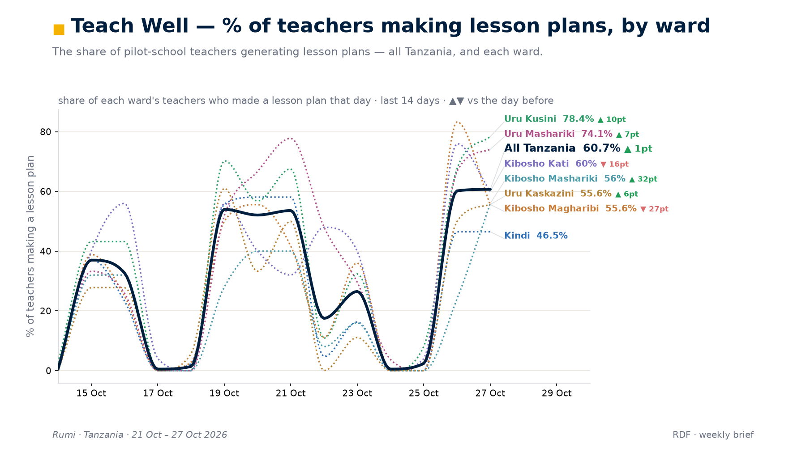
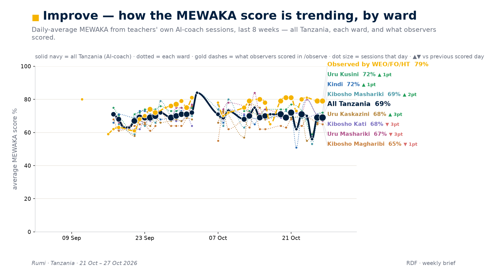

An operator owns one region's Rumi, built around Teach Well, Improve, Learn.
what every change you make is for
Teach Welllesson plans teachers use in class
Improvecoaching that makes the teaching better
Learnwhat children learn, and how we know
Own.Ship.Prove.
a region's teachers, planned with the teama hypothesis made live, with the FSPsmeasured against the hypothesis
What do I own?
How does work move?
How do I know it worked?
You own your region's teacher experience, and you plan it with the team.
your region
product
numbers
bugs
outages
the product in the teachers' hands: lesson plans, the coach, the quiz, the portal
the region's numbers, every morning
every bug report from a teacher or coach lands with you
outages: yours to handle, with the team's help
plan with the field team (FSPs) and builders
nothing built without teachers' input
visit schools, even before launch
Widen what's possible: find another reading of the problem, then prototype it.
the team hearsTeachers have no time: make plans shorter.
another readingCould a lesson plan be audio instead?
the gapNo way to collect learning data.
you noticeChildren can do quizzes at home.
you buildA prototype: teachers send quizzes home.
Ship on a hypothesis, not an opinion: work it out with the FSPs.
FSPs are the field team who visit schools. Settle each hypothesis together, then keep to the four steps.
What you see
11–16 pages each
no learning data
Why
too long for phones
no way to collect
What might help
phone-sized HTML pages
quiz sent home
If… then…
then more get used
then scores return
the number, and where it is low
the teacher’s reason, in their own words
the change, and when teachers get it
If this, then that, because…, and what would prove it wrong
Lesson plans
Quizzes at home
Your agents work overnight; you check their work in the morning.
you
offline
you
You sit at the centre. Each agent takes a piece of the work and gets on with it.
Each agent has an inbox. Agents pass each other plain messages.
Leave the swarm on overnight. You go offline; the work goes on.
In the morning it shows you what it built, on staging, a safe copy.
When you have looked and you are happy, it goes to production.
Always test end to end before it ships: on WhatsApp, or automated tests in the browser.
staging
end-to-end test
you look
production
Huddles are where you harvest context. Never skip one.
In your region’s huddle, you talk through
specific hypotheses
other readings of a problem
what the team is seeing
Sindh
Mahrah
Balochistan
Kamal
It keeps you in sync with your team.
Each week, one operator shows what they built and what they learnt.
20 min
10 min
30 min
what they built, what they learnt
questions
each region’s weekly numbers, read together
Quizzes in the in-app browser
Meta’s pricing changed and the bill jumped. One operator moved the quiz into WhatsApp’s in-app browser, wrote it up as a skill, and every region is getting it.
Lesson plans as phone pages
One operator rebuilt lesson plans as web pages for the phone: 11 to 16 pages became 5 to 9. They shared it, and the other regions copied it.
One region learns it; every region gets it.
Visit a school once a fortnight. It is not optional.
You go to see three things happen in a real classroom
Teach Well
the board, the lesson as it is taught
Improve
the conversation with the teacher
Learn
the children’s work
Afterwards, agree with your regional team what changes.
Prove it: measure against the hypothesis, and the number shows in the RDF.
Hypothesis
written with the FSPs, before you ship
Measure
everyone measures against the hypothesis
A/B test
where you can: some teachers get the change, some do not
The RDF
each region’s weekly charts: the number shows there

Teach Well
the share of teachers who made a lesson plan each day, by ward

Improve
the coaching score over eight weeks, against what observers scored
The RDF: the same charts, every week, for each region. Tanzania, 21–27 Oct.
With the FSPs: a hypothesis. Ship it, measure it, prove it.
Own.Ship.Prove.
a region's teachers, planned with the teama hypothesis made live, with the FSPsmeasured against the hypothesis
Say them back to me.
Ask anything; every answer has a numbered page.
1Where things live, who to ask
3The skills you use first
4How a change reaches production
5The rituals calendar
7The cost figures
8The outage, as the channel records it
9The Agent Management team
11Three worlds you already know
12A sprint goal is a hypothesis
13Privacy and words
14Sources
15When something breaks
a01
Four places hold the work, and every kind of question has an owner.
Where it lives
The workspace · the root rules, 117 skills, your region's folders
The ledger · every piece of work is a bead: a ticket in one shared ledger
The board · Notion cards, updated before each retro
The channel · #operators, and your region's huddle
Your setup · a one-page start guide, with no secrets in it
Who to ask
A problem in your region · the region's huddle
Keys, credits, top-ups · Haroon, with the numbers
Agents' tools, tests, data clean-up · the Agent Management team
Blocked, or a production risk · /escalate, then stop
A post signed Rumi · an operator's agent; its work goes on a bead
a03
A hundred and seventeen skills on disk today; start with these five.
The first five
bugbusting · a region's bug backlog, swept into one plan to approve
debugging · one broken thing, one root cause
routine-data-flow · the same charts every week, so you see what moved
school-visits · who to sit with, when, and three questions
storytime · anything you post to Slack
All 117, by job
27
build
25
write to people
14
run agent teams
13
debug
13
ship
8
data
6
report to teams
11
everything else
a04
Staging is yours when the work is ready; production needs a fresh go.
The main Rumi bot
Your own worktree
A pull request to staging
Staging: check it booted
A fresh go, then main
Live in every country
This quarter: 473 merges into main.
The Islamabad bot
Sandbox: merge freely
Staging: ready to ship
End-to-end tests pass
A person's go
Main: live for Islamabad
This quarter: 2,095 of 3,742 pull requests came in through sandbox.
a05
Daily in your region, weekly with the guild, sprints and visits every fortnight.
Every day
your region's huddle, and the region's numbers each morning
Every week
the operator guild: one agenda item, learnings, no targets
Every sprint
two weeks; retro and planning in person; cards updated first
Sprint goals
set in your region as hypotheses, in one shared sheet
Every fortnight
a school visit at least; the visit skill before, findings after
Every test
through the A/B testing skill
Every night
Rumi's backup report in #operators
a07
Operators watch the bill; the daily messaging cost fell to under a tenth.
Messaging, a day
about $2,000; about $1,000 after the quiz changes; $100 to $200 after the in-app browser
Rumi outside Islamabad, a month
about $8,000; the target set on 19 Oct is $2,000
Voice, a month
about $5,000; about $1,000 expected after the switch, every region by 2 Oct
Images, one region
138 videos in a week against 19; both features off by 15 Oct
The rule
post the cost breakdown before and after every change (7 Sep)
a08
For most of a day coaching was down; lesson plans kept working.
21 Oct, 4:40 pm
our hosting provider stops taking our releases
22 Oct, early
the provider reports an incident; coaching feedback and quizzes stop
22 Oct, all morning
lesson plans keep working: they are made ahead of time
22 Oct, 11:33 am
new keys on every server; coaching is back
22 Oct, same day
a written postmortem: what is still open, who does what
23 Oct, 1:07 pm
one region's last errors stop; the rest of the work has an owner
26 Oct
the retro: each region owns its own resilience and backups
What we told teachers: a coaching reply that failed between 5:30 and 11:30 am was nothing the teacher did. Times are Pakistan time.
a09
A separate team looks after the agents' tools, the tests and clean data.
Since 8 Oct
its own team and its own sprints, apart from the operators
Since 26 Oct
one mission: clean data across regions, then the agents' tools and end-to-end tests
You already use
telemetry on which skills run (13 Oct)
end-to-end tests that run after a relevant change (28 Aug)
the bug-busting skill (16 Sep)
How to ask
in #operators: tag the owner, say what happened, the impact and a fix
a11
The operator job already touches work you know.
The bill and the link
Children on quizzes were half of one bot's messaging bill. The class quiz now goes as a link.
The operator's part: port the flow, watch the bill.
When the numbers disagree
One region can mean four different things in our data. Mismatches become one-page issues to fix.
The operator's part: find the cause; agree one definition.
A photo that changed a prompt
The digital coach ignored classroom photos. The fix proved itself next day; other regions took it.
The operator's part: ship it, prove it, share it.
Examples only. Haroon decides who does what.
a12
Every sprint goal is a measured number and a guess you can prove wrong.
1 Goal
the measured number this should move
2 What we see
where exactly it is low
3 Why
the user's reason, in their words, never guessed
4 What we change
and the date users get it
5 Why they would want it
on a day nobody is asking
6 IF … THEN … because …
one line, said aloud, no “and”
7 We expect
from today's number to the target, by which week
8 We drop it if
the result that proves us wrong
9 Action items
one owner and one date each
One sheet for every region since 13 Oct. A real result, 16 Oct: “A tie, none the wiser.”
a13
No teacher, child, coach, parent or school is ever named.
Names
never a teacher, child, coach, parent or school, anywhere
Pronouns
they and their for every teacher, child, coach and parent
Users
find a person by id, never by phone number
Keys
in your own env file only; never in a chat, card or file
Colleagues
named to credit them; a miss is told without a name
Messages
brief by default, the answer first, in Rumi's voice
Spelling
British: colour, centre, cancelled
a14
Every claim on the main screens, and where to open it.
s01 · What an operator is
An operator owns one region's Rumi
meeting 30 Jul
built around Teach Well, Improve, Learn…
operator review 29 Oct, it
Teach Well: lesson plans teachers use in…
.claude/skills/sprint-goal
Improve: coaching that makes the teaching…
.claude/skills/sprint-goal
Learn: what children learn, and how we know
meeting 21 Sep
s02 · Own. Ship. Prove.
Own. a region's teachers, planned with the…
lead ruling 17
Ship. a hypothesis made live, with the FSPs
operator review 29 Oct, it
Prove. measured against the hypothesis
operator review 29 Oct, it
What do I own? How does work move? How do…
lead rulings
s03 · What you own
You own your region's teacher experience…
meeting 30 Jul
product: the product in the teachers'…
Slack 6 Oct
numbers: the region's numbers, every morning
meeting 24 Aug
bugs: every bug report from a teacher or…
meeting 14 Sep
outages: yours to handle, with the team's…
meeting 26 Oct
plan with the field team (FSPs) and builders
operator review 29 Oct, it
nothing built without teachers' input
operator review 29 Oct, it
visit schools, even before launch
Slack 9 Sep
s03b · Widen what's possible
Widen what's possible: find another…
operator review 29 Oct, it
the team hears: teachers have no time…
meeting 21 Sep
another reading: could a lesson plan be…
operator review 29 Oct, it
the gap: no way to collect learning data
operator review 29 Oct, it
you notice: children can do quizzes at home
meeting 21 Sep
you build: a prototype, teachers send…
operator review 29 Oct, it
s04 · Ship on a hypothesis
Ship on a hypothesis, not an opinion; work…
operator review item 3, 29
FSPs are the field team who visit schools
outputs/lanes/rev-facts/FA
four ingredients: what you see, why, what…
sprint-goals skill
Example A: lesson plans of 11-16 pages…
meeting 21 Sep
Example B: no learning data; a quiz the…
meeting 21 Sep
s05 · Agents at night
agent teams and swarms; the operator at…
operator review item 9, 29
each agent has an inbox; agents message…
operator review item 9; .c
staging: a safe copy; production only…
root CLAUDE.md:120-122
end-to-end test before it ships: on…
operator review item 9
s07 · Huddles
Huddles are where you harvest context…
meeting 8 Oct
talk through specific hypotheses and other…
meeting 29 Sep
Mahrah: Sindh
M:d2fcc0c0 27 Oct 'Sindh C
Kamal: Balochistan
operator review item 12
s07b · The weekly meeting
weekly: one operator shares what they…
meeting 24 Aug
Meta's pricing changed and the bill…
meeting 8 Oct
lesson plans rebuilt as phone pages: 11-16…
meeting 21 Sep
s07c · School visits
a school visit once a fortnight, mandatory
meeting 10 Sep
see Teach Well, Improve, Learn in the…
operator review items 8 an
afterwards, agree with your regional team…
Slack 9 Sep
s08 · Prove
Prove: there is a hypothesis, everyone…
sprint-goals skill
FSPs = the field support programme, the…
Slack 8 Oct
The RDF: the same charts, same cohort…
routine-data-flow skill
RDF charts (aggregate only): Teach Well…
06_Logs & Misc/Reports/Act
s12 · Own. Ship. Prove.
Own. Ship. Prove. with its glosses
lead ruling 1
a15
When something breaks: undo it, tell people, then find the cause.
Undo it
on staging; for Islamabad, in sandbox
Tell your region and #operators
what happened, the impact, the fix
Tell teachers
if it touched them: it was nothing they did
Find the cause
read the logs; one cause, with evidence
Fix it properly
a ticket (a bead), a red test, then the fix
A fix for production
still a fresh go
Bugs in what you shipped
yours for about a week after go-live
An outage in your region
yours to handle, with help
A good ask: what happened · what I found · what I have not confirmed · questions